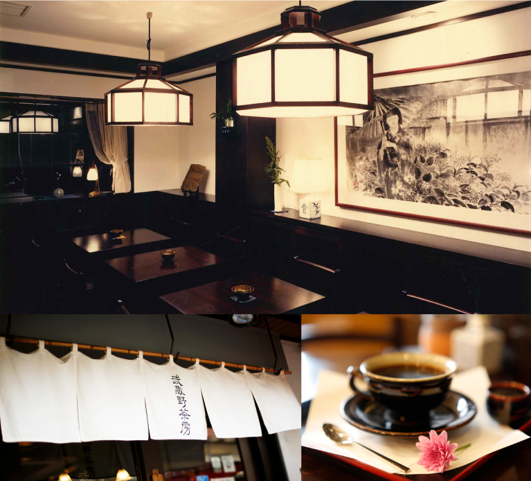
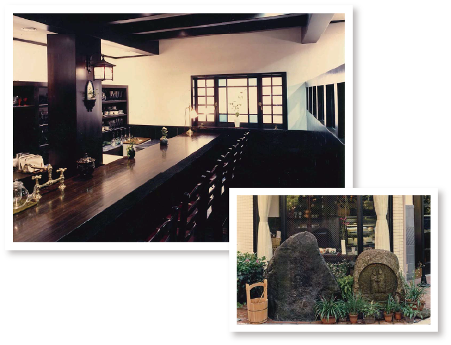
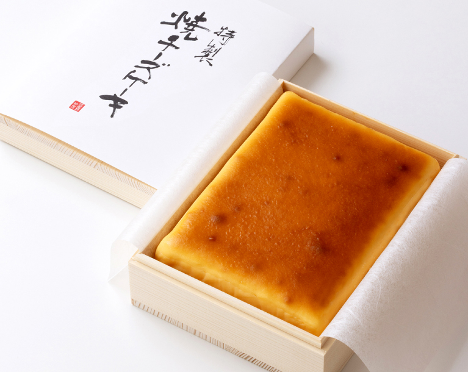
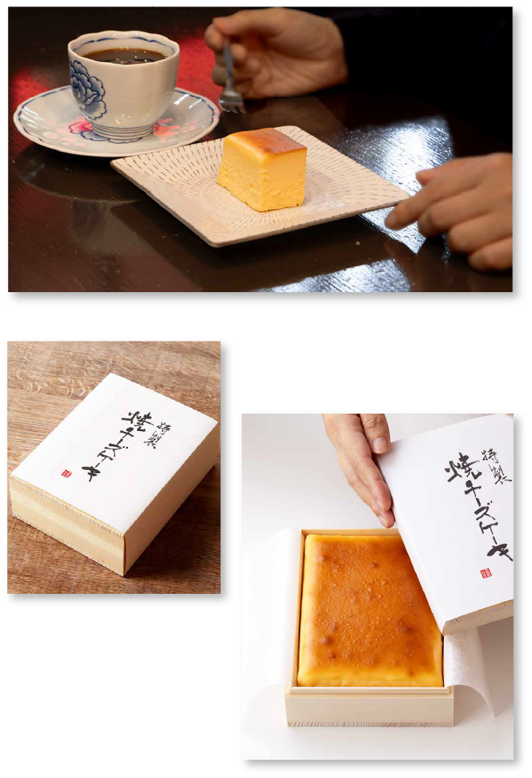
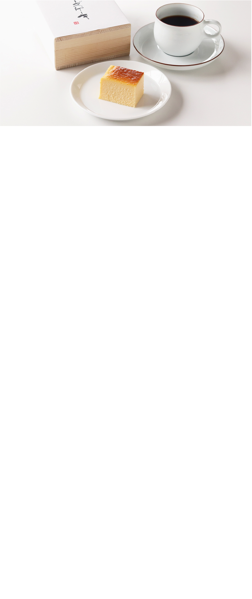
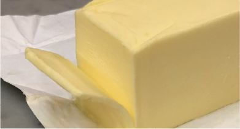
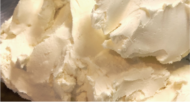
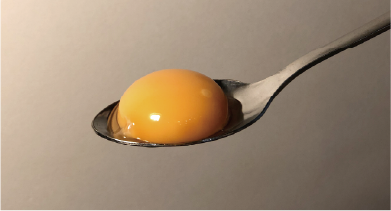
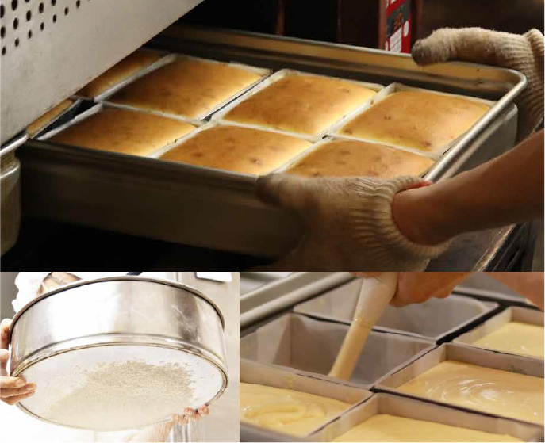
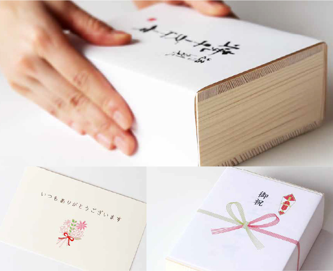

心安らぐ時間を
過ごしていただきたい。
武蔵野茶房創業からの想い。
そのひと時を、
大切な方への贈りものとして
お届けします。
武蔵野茶房の誕生

心地よいひとときを過ごしていただきたい
1989年、東京郊外に誕生した武蔵野茶房。
創業以来大切にしてきたのは、
日本らしい「おもてなしの心」
今日の出逢いが
より豊かなものになりますように——。
武蔵野茶房は、人と人、そして時をつなぐ
そんな場所でありたいと願い、
これからも歩み続けてまいります。
武蔵野茶房の想いを、
一つのチーズケーキに。

創業当時から喫茶メニューとして多くの
お客様に愛され続けてきた
こだわりの焼チーズケーキ。
長年親しまれてきた味わいを大切にしながら、
素材からパッケージまで一つ一つを見直し、
より特別感のある木箱入の
“特製焼チーズケーキ”が誕生しました。
長く愛されてきた味わいを、
これからも多くの方へお届けいたします。

すべては大切な想いを
届けるために。


国産バターが生み出す、
豊かな香り
焼き上げた瞬間に広がる香ばしい香り。その豊かな風味を支えているのが、厳選した国産バターです。上質な香りが、味わいに奥行きを与えています。

2種のチーズが織りなす
味わい
全体の約70%にも及ぶチーズを使用。オーストラリア産クリームチーズとフランス産フロマージュブランを合わせ、濃厚でありながら爽やかな味わいに仕上げました。

卵黄だけで引き出す、
濃厚なコク
使用するのは、千葉県産「農家の朝」や、群馬県産「榛名山麓のこだわり卵」など、厳選した卵の卵黄のみ。卵黄ならではの濃厚なコクが加わり、深みのある味わいに。

ひとつひとつを丁寧に。
職人が一つ一つ手づくりでつくり上げます。
生地はあえて泡立てずに仕立てることで、
濃厚で重厚感のある味わいに。
なめらかに裏ごしした生地を
オーブンでじっくり蒸し焼きにし、
生クリームや薄力粉を使わず、
チーズ本来の風味を存分に引き出しました。

あなたの想いを届ける
大切な方への贈りものだからこそ、
一つ一つ心を込めてご用意しています。
お祝い、お礼、ご挨拶など、
さまざまな贈答シーンにご利用いただけますよう、
のしやメッセージカードを無料で承ります。
大切なひと時に寄り添う贈りものとして、
お選びいただけましたら幸いです。